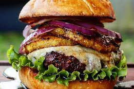

Hawaiian Hamburger Recipe

Introducing our Hawaiian Hamburger a taste of the islands in every bite!
Picture this: Juicy beef patties kissed by the grill, slathered in teriyaki sauce,
and crowned with caramelized pineapple, crispy bacon, and melty Swiss cheese.
It's like a luau in your mouth! Perfect for laid-back BBQs or whenever you're craving a tropical escape.
Get ready to elevate your burger game with a touch of aloha!
hamburger ingredients
- 1 pound ground beef
- 4 hamburger buns
- 4 pineapple slices (fresh or canned)
- 4 lettuce leaves
- 4 slices of Swiss cheese
- 4 slices of cooked bacon
- 1 red onion, thinly sliced
- 1 tomato, sliced
- 4 tablespoons teriyaki sauce
- Salt and pepper to taste
Steps
- Prepare the Grill: Preheat your grill to medium-high heat.
- Form the Patties: Divide the ground beef into four equal portions and shape
- Grill the Patties: Place the patties on the preheated grill and cook for about 4-5 minutes on each side, or until desired level of doneness is reached. During the last few minutes of cooking, brush each patty with teriyaki sauce and place a slice of Swiss cheese on top of each patty to melt.
- Grill the Pineapple: While the patties are cooking, grill the pineapple slices for about 2-3 minutes on each side, or until they develop grill marks and caramelize slightly.
- Assemble the Burgers: Toast the hamburger buns on the grill for a minute or two until lightly golden. Spread mayonnaise or your preferred condiment on the bottom half of each bun. Place a lettuce leaf on top of the condiment, followed by a cooked hamburger patty with melted cheese. Add a slice of grilled pineapple, a slice of tomato, a slice of cooked bacon, and a few slices of red onion. Top with the other half of the hamburger bun.
- Serve: Serve your Hawaiian hamburgers immediately while still warm. Enjoy the tropical flavors!